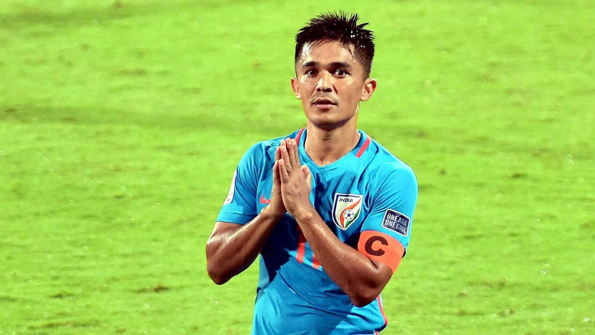

Football is like life - it requires perseverance, self-denial, hard work, sacrifice, dedication and respect for authority.
ISL: Sunil Chhetri scored the only goal of the match in the 55th minute, helping his side maintain their unbeaten streak in the Indian Super League (ISL) this season.
Sunil Chhetri's brilliant header in the 55th minute of the match, helped defending champions Bengaluru FC beat Kerala Blasters 1-0 at the Sree Kanteerava stadium in Bengaluru on Saturday. Chhetri, who failed to find the back of the net during the international break, scored the only goal of the match helping his side maintain their unbeaten streak in the Indian Super League (ISL) this season. With this win, Bengaluru climbed to the second spot in the points table as they have nine points, same as leaders ATK who have played one game less. Out of five games, Bengaluru have won only two, while Kerala Blasters have only one win to their name so far and are on the seventh place with four points.
The away side showed plenty of intent right from the start, pressing Bengaluru hard and forcing mistakes from the reigning champions. The first chance did fall for Kerala Blasters when Sergio Cidoncha picked out Rahul KP at the far post with a lovely cross. However, the youngster mistimed his header and the chance went abegging.
An energetic Kerala Blasters continued to dictate terms and should have taken the lead six minutes later. Bartholomew Ogbeche fed Raphael Messi Bouli into the box. He tried to return the favour, but a sliding Ogbeche just could not get there. Bengaluru, after a slow start, started to get more on the ball and create chances. They thought they had the lead in the 28th minute when Harmanjot Khabra played Udanta Singh free down the right wing. The winger's cross from the byline was headed in by Raphael Augusto, but the linesman deemed the ball to have gone over the line before Udanta got the cross in. An unfazed Kerala continued to ask questions of the Bengaluru defence. But there were nervous moments for the away side in defence too. Albert Serran headed over from point-blank range after Augusto pulled back a ball from the byline in the 36th minute.
Calling the partnership with Laxman a memorable moment of his career, Rahul Dravid said it was the period when the crowd really got behind the Indian team.Read More...
Indian tennis great Leander Paes on Monday stressed on the need to focus on learning new skills during the coronavirus-forced lockdown to keep oneself mentally and physically fit.Read More...